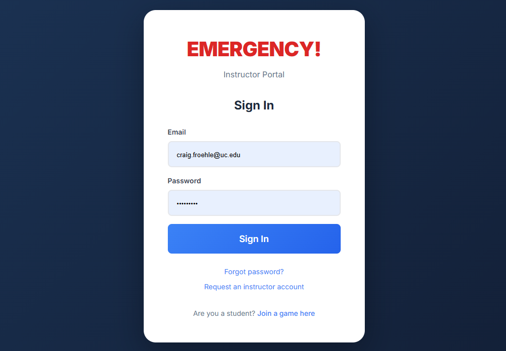
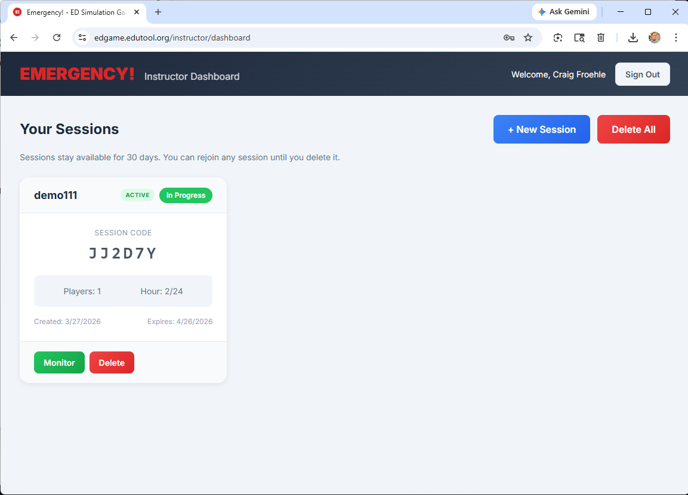
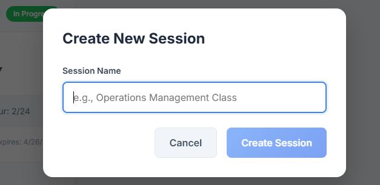
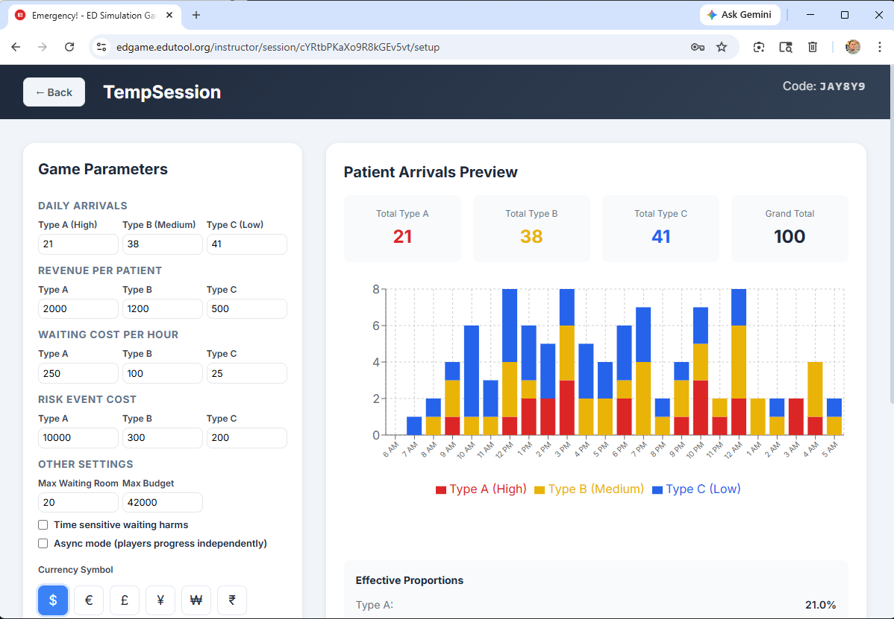
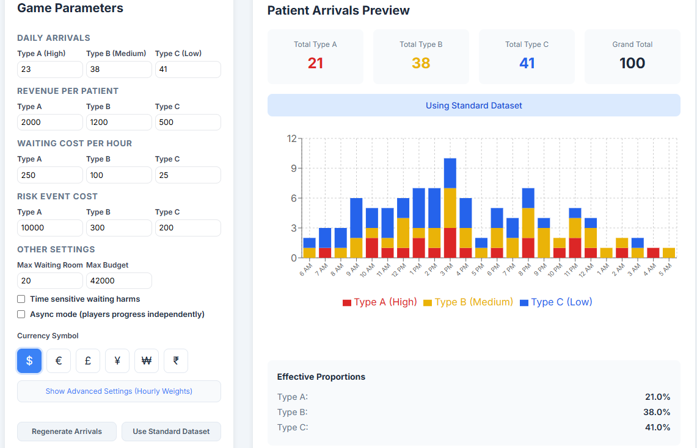
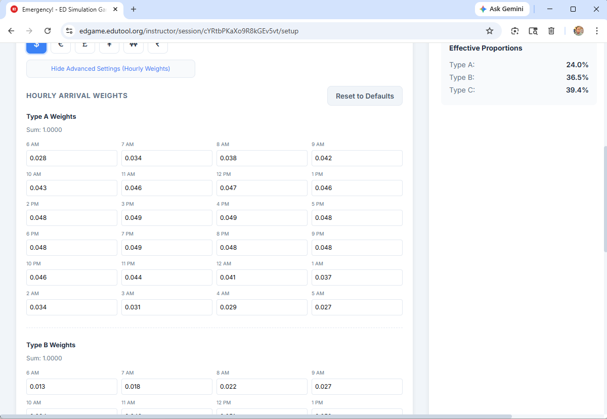
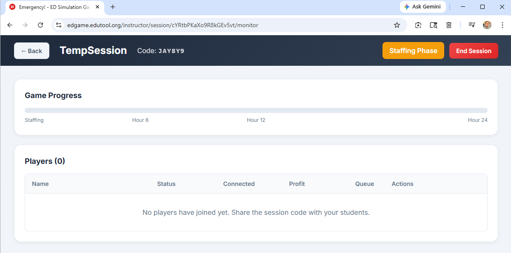
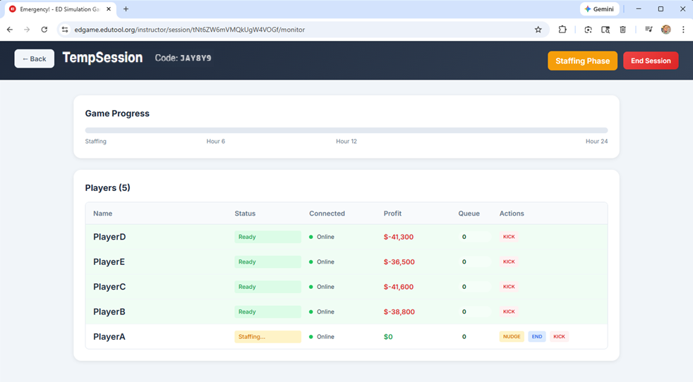
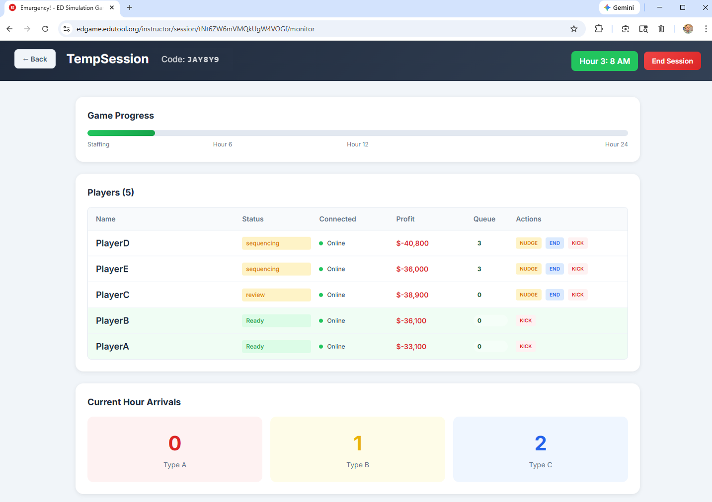

Overview
EMERGENCY! was originally designed as a physical simulation game meant for in-class play. It focuses on the effects of demand variability on service operations, specifically using an emergency department as the operational context.
IMPORTANT: If you have not read through the Player Instructions yet, please do that before reading through the instructor documentation, as some concepts and definitions (e.g., patient types) are provided there in more detail.
This online version may be played in two modes: Synchronous and Asynchronous. Synchronous play is intended for use in a classroom environment, or for use in a real-time online (distributed) classroom setup. Asynchronous play is for when instructors wish to allow their students to play the game whenever the students prefer, potentially multiple times. Both modes provide essentially the same play experience, but the Synchronous mode gives the instructor additional control to ensure no team advances further in the simulation than the rest of the teams.
This online version of EMERGENCY! is freely available for use in academic institution courses, seminars, and workshops.
Getting Started
NOTE: Please use the Instructor Account Request Form if you do not already have instructor access to the simulation.
- Navigate to edgame.edutool.org and click Log in
- Use your registered email address and password to sign in to your Instructor Dashboard.
- You should then be taken to your instructor dashboard, which lists all your active and recent game sessions. If you have never used Emergency! before, your dashboard will not have any sessions in it.



From the dashboard screen, you can monitor and delete active or recent sessions, start a new session, or delete all sessions. Clicking on the "+ New Session" button will take you into the session creation page, which is covered in the next section.
Upon clicking the "+ New Session" button, a dialog will appear requesting a name for the new session. This is used to help instructors and students ensure they are interacting with the correct simulation session.

Once the session name is entered and the "Create Session" button has been pressed, the instructor will be taken to the new-session setup page. The session name is at the top left. At the top right is the session code, which the instructor will provide to students so they can participate in the session.

The online version of Emergency! gives instructors direct control over many different parameters — a capability not possible in the physical version of the game. These controls allow you to tailor the simulation difficulty (or novelty) when exploring how arrival variability affects system performance.
The patient-arrival pattern across the 24 simulated hours (shown in the stacked bar chart) is randomly generated to match the total daily arrival counts (by acuity level) indicated in the first parameter fields above. If the instructor wishes to change the pattern of patient arrivals, there are three options available: Default, Random, and Advanced (Random is default). DEFAULT: There is a standard, fixed arrival pattern (that is empirically based...it represents the average hourly arrivals at a large, urban, midwestern US emergency department) instructors can use. If an instructor is running multiple sessions simultaneously, using this distribution will ensure all sessions have the same input arrivals. Click the "User Standard Dataset" button to use that pattern, which will be reflected in the bar chart along with a label above it reading "Using Standard Dataset."  RANDOM: If the "Regenerate Arrivals" button is clicked, the simulation will regenerate a randomized pattern of patient arrivals corresponding to the daily arrival totals indicated in the parameter input fields and show that pattern in the bar chart. Each click of the button will generate a new arrivals pattern. If more or fewer than 100 total patients are set to arrive, their relative proportions will be shown below the bar chart. ADVANCED: If the "Show Advanced Settings (Hourly Weights)" button is clicked, the Game Parameters page will expand to reveal three tables, one for each patient class (A, B & C). Each table shows the proportion of total arrivals that each hour generates, so all 24 proportions must add up to 1.00 (that sum is shown underneath each table's header). Once the hourly weights are to your liking, scroll to the bottom of the tables and click the "Regenerate Arrivals" button. Check to make sure the bar chart looks like what you expect. The instructor can restore the hourly weight values to their defaults by clicking the "Reset to Defaults" button. 
Tip: Only alter the hourly weights if you have a specific scenario you want the students to experience. Otherwise, the existing weights reflect generalized arrival patterns for emergency departments and should serve the simulation well.
Once all the above parameters are to your liking, click the "Start Session" button at the bottom of the page. This will make the session "live" and allow students who have the session code login and begin to allocate their budget to staff their rooms. Managing the actual game play once the session is started is covered in the next section. Once the new session has started, the instructor will see the following session screen. On the top of this screen are the session name, the join code (in the example shown, the code is JAY8Y9), a game phase indicator ("Staffing Phase" is shown), and an "End Session" button.  Below those items, the "Game Progress" indicator shows, in real time, where along the simulation the session is. Below that is the list of players/teams, which will populate as students log into the session.  Note in the image above that the instructor has several buttons for each team. Depending on what stage each team is, these buttons may include Nudge (a note flashes on that player's screen reminding them to complete their turn), End (the decisions for that round are automatically made for them), and Kick (removes that player from the session entirely). These actions are immediate and cannot be undone, so please use "End" and especially "Kick" only when circumstances require it.  When the last player/team has completed hour 24 of the simulation, each player/team AND the instructor will be shown a statistics page (see example below). If you want to either save the team performance data as a CSV (comma-separated value) file or download the graphs as a PDF, click the corresponding button at the top of the session statistics screen.
For additional guidance on how to lead the class discussion through the core discoveries and key concepts that are surfaced by this simulation, please see the teaching notes (available on request, for instructors only, by emailing Craig Froehle.)
With no pre-work or setup, the online version of EMERGENCY! typically requires 80-90 minutes. This can be reduced by assigning the budget allocation step as pre-work to students/teams so they will come into the classroom already having a plan as to how many rooms of each type they will be staffing. Debrief can run from 10 minutes to about 30 minutes, depending on how deeply you wish to plumb the issues (and how engaged your students are). Both work, but in our experience, teams of 2 students work best for the online version of EMERGENCY! Interestingly, the physical simulation version works best with teams of 3-4 students, as each student can take on a different role (e.g., moving patient tokens), many of which are automated in the online version. If you are running the simulation live in a classroom where everyone is playing at the same time, and you wish all the players/teams to experience each hour's arrivals at the same time, then use the default Synchronous mode. However, if you are assigning EMERGENCY! as an out-of-class assignment, or are running it in an asynchronous online class environemnt, then the Async mode will likely be a better fit. We are still exploring these limits, but it has been successfully run in a class with around 35 players/teams in one session. So if you have your students team up into pairs, it should support a class up to around 72 students.
Contact: Questions not answered here? Reach Craig Froehle via email at
craig.froehle@uc.edu.
Session Setup
Setup Parameters
Parameter
Description
Default
Daily ArrivalsThe number of patients of each acuity (urgency) level arriving during the 24 simulated hours
Type A: 21
Type B: 38
Type C: 41
Revenue Per PatientHow much revenue is generated for each patient who is fully treated and exits from the system. Money units are set further below.
Type A: 2000
Type B: 1200
Type C: 500
Waiting Cost Per HourThe cost (reduction in profit) generated by each patient for each hour that patient waits for care.
Type A: 250
Type B: 100
Type C: 25
Risk Event CostThe cost generated by each patient who, while waiting, is harmed. High (A) acuity patients suffer a cardiac arrest while Medium (B) and Low (C) acuity patients leave without being seen by a caregiver. A, B, and C patients have a 5%, 10%, and 15% chance of being harmed, respectively, each hour they wait.
Type A: 10000
Type B: 300
Type C: 200
Max Waiting RoomThe maximum number of patients that the waiting room can accommodate. If patients arrive when the waiting room is full and cannot be accommodate in an empty exam room, they are turned away and their potential revenue is lost.
20
Max BudgetThe budget players are given to staff their exam rooms. High-acuity, medium-acuity, and low-acuity rooms cost 3500, 2500, and 1800, respectively, to staff (and make available to care for patients) for the 24-hour simulation period.
42000
Time Sensitive Waiting HarmsThis option increases the cost penalty for waiting patients each hour that a patient waits.
Off
Async ModeThis option allows players to advance through the 24 hours of the simulation and complete the session independently of any other players logged into the session. Note that enabling this option removes the ability of the instructor to hold students back from advancing to the next hour or completing the simulation.
Off
Currency SymbolThis is the monetary symbol used in front of all revenue, cost, and profit values in the student interface.
$
Patient Arrivals
Running a Session
Ending the Simulation

Debrief
FAQs
How long does the simulation take to run? How much class time should I allocate to it?
Should each student play on his/her laptop in class, or should I use teams?
When should I use Async (asynchronous) mode?
How many students can EMERGENCY! support simultaneously?